Ridge regression: visualize effect of changing lambda and selecting it with CV and EB
Contents
% This file is from pmtk3.googlecode.com %ns = [21 50]; %for n=ns(:)' n = 21; setSeed(0); [xtrain, ytrain, xtest, ytestNoisefree, ytest, sigma2] =... polyDataMake('sampling','thibaux','n',n); deg = 14; addOnes = false; if ~addOnes % To avoid the need to add 1s to X, let us center the response %[y, ybar] = centerCols(y); %w = fitFn(X, y, lambda); %model.w0 = ybar - mean(X)*w; ytrain = centerCols(ytrain); ytest = centerCols(ytest); end if 1 % Because the dataset is so small, we proprocess it outside the % CV loop, so that all folds get the same treatment, pp = preprocessorCreate('poly', deg, 'rescaleX', true, 'standardizeX', false, 'addOnes', false); [pp, Xtrain] = preprocessorApplyToTrain(pp, xtrain); [Xtest] = preprocessorApplyToTest(pp, xtest); pp = preprocessorCreate( 'standardizeX', false, 'addOnes', addOnes); else Xtrain = xtrain; Xtest = xtest; pp = preprocessorCreate('rescaleX', true, 'poly', deg, 'addOnes', addOnes); end
Fit model by MLE and plot
model = linregFit(Xtrain, ytrain, 'preproc', pp); [ypredTest] = linregPredict(model, Xtest); figure; scatter(xtrain, ytrain,'b','filled'); hold on; plot(xtest, ypredTest, 'k', 'linewidth', 3);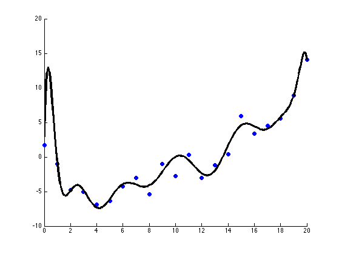
compute train/test error for each lambda using ridge
lambdas = logspace(-10,1.3,10); NL = length(lambdas); printNdx = round(linspace(2, NL-1, 3)); testMse = zeros(1,NL); trainMse = zeros(1,NL); for k=1:NL lambda = lambdas(k); [model] = linregFit(Xtrain, ytrain, 'lambda', lambda, 'preproc', pp); [ypredTest, s2] = linregPredict(model, Xtest); ypredTrain = linregPredict(model, Xtrain); testMse(k) = mean((ypredTest - ytest).^2); trainMse(k) = mean((ypredTrain - ytrain).^2); end hlam=figure; hold on ndx = log(lambdas); % 1:length(lambdas); plot(ndx, trainMse, 'bs:', 'linewidth', 2, 'markersize', 12); plot(ndx, testMse, 'rx-', 'linewidth', 2, 'markersize', 12); legend('train mse', 'test mse', 'location', 'northwest') xlabel('log lambda') title('mean squared error') % Indicate which lambda values were chosen for plotting %for i=printNdx(:)', plot(ndx(i), 0, '*', 'markersize', 12, 'linewidth', 2); end printPmtkFigure(sprintf('linregPolyVsRegTestErrN%d', n))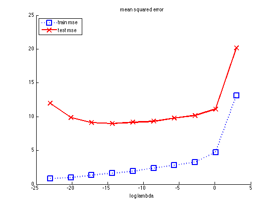
print fitted function for certain chosen lambdas
for k=printNdx lambda = lambdas(k); [model] = linregFit(Xtrain, ytrain, 'lambda', lambda, 'preproc', pp); [ypredTest, s2] = linregPredict(model, Xtest); ypredTrain = linregPredict(model, Xtrain); sig = sqrt(s2); figure; scatter(xtrain, ytrain,'b','filled'); hold on; plot(xtest, ypredTest, 'k', 'linewidth', 3); plot(xtest, ypredTest + sig, 'b:'); plot(xtest, ypredTest - sig, 'b:'); title(sprintf('ln lambda %5.3f', log(lambda))) printPmtkFigure(sprintf('linregPolyVsRegFitK%dN%d', k, n)) end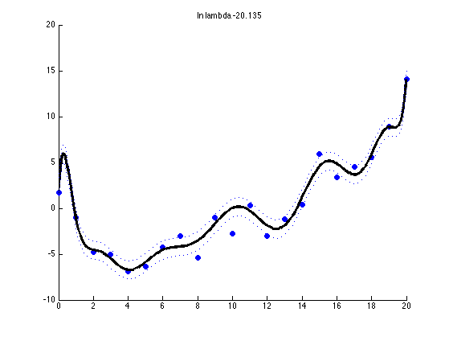 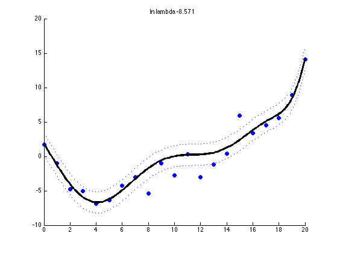 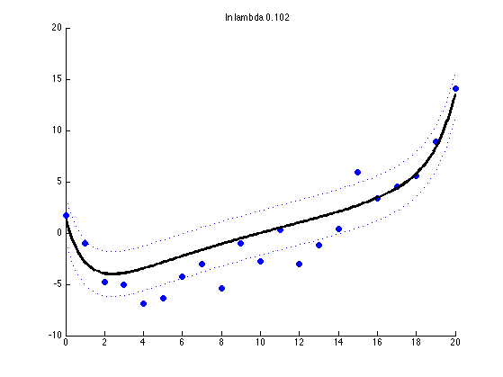
Cross validation
for k=1:NL lambda = lambdas(k); fitFn = @(Xtr,ytr) linregFit(Xtr, ytr, 'lambda', lambda, 'preproc', pp); predFn = @(mod, Xte) linregPredict(mod, Xte); lossFn = @(yhat, yte) mean((yhat - yte).^2); N = size(Xtrain, 1); %nfolds = N; % LOOCV nfolds = 5; % since the data is sorted left to right, we must randomize the order randomizeOrder = false; [mu(k), se(k)] = cvEstimate(fitFn, predFn, lossFn, Xtrain, ytrain, nfolds, ... 'randomizeOrder', randomizeOrder); end figure; hold on ndx = log(lambdas); % 1:length(lambdas); xlabel('log lambda') ylabel('mse') errorbar(ndx, mu, se, 'ko-','linewidth', 2, 'markersize', 12 ); title(sprintf('%d-fold cross validation, ntrain = %d', nfolds, N)) if n <= 21 % When N is small, CV massively over-estimates error for small % lambda, so we have to use log scale set(gca,'yscale','log') else yy = get(gca,'ylim'); set(gca,'ylim',[0 min(yy(2), 20)]) grid on end % draw vertical line at best value dof = 1./(eps+lambdas); if n <= 21 idx_opt = argmin(mu); else idx_opt = oneStdErrorRule(mu, se, dof); end verticalLine(ndx(idx_opt), 'color','b', 'linewidth',2); printPmtkFigure(sprintf('linregPolyVsRegCvN%d', n)) % do it again using fitCV fitFn2 = @(Xtr,ytr,lam) linregFit(Xtr, ytr, 'lambda', lam, 'preproc', pp); [model2, bestParam2, mu2, se2] = ... fitCv(lambdas, fitFn2, predFn, lossFn, Xtrain, ytrain, nfolds,... 'randomizeOrder', randomizeOrder); if ~randomizeOrder assert(approxeq(mu, mu2)) assert(approxeq(se, se2)) end % do it again using path algo if glmnetInstalled() [bestModel, path] = linregFitPathCv(Xtrain, ytrain, 'regtype', 'l2', 'preproc', pp,... 'nfolds', nfolds); figure; %plot(path.errMean) plot(path.cvErr) end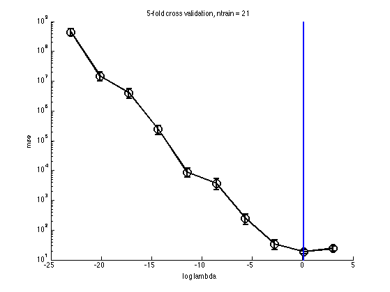
Bayes
We compute log evidence for each value of alpha to see how it compares to test error To simplify things, we use the known noise variance
beta = 1/sigma2; alphas = beta * lambdas; for k=1:NL lambda = lambdas(k); [model, logev(k)] = linregFitBayes(Xtrain, ytrain, 'preproc', pp, ... 'prior', 'gauss', 'alpha', alphas(k), 'beta', beta); ypredTest = linregPredictBayes(model, Xtest); ypredTrain = linregPredictBayes(model, Xtrain); testMseB(k) = mean((ypredTest - ytest).^2); trainMseB(k) = mean((ypredTrain - ytrain).^2); end % Sanity check - Bayes with fixed sigma should be same as ridge assert(approxeq(testMseB, testMse)) assert(approxeq(trainMseB, trainMse)) % Error vs alpha - should be same as error vs lambda figure; hold on ndx = log(alphas); plot(ndx, trainMseB, 'bs:', 'linewidth', 2, 'markersize', 12); plot(ndx, testMseB, 'rx-', 'linewidth', 2, 'markersize', 12); legend('train mse', 'test mse', 'location', 'northwest') xlabel('log alpha') title('mean squared error') % Log evidence vs alpha figLogev = figure; plot(log(alphas), logev, 'ko-', 'linewidth', 2, 'markersize', 12); xlabel('log alpha') title('log evidence') % Plot p(m|D) vs alpha figure; prob = exp(normalizeLogspace(logev)); bar(log(alphas), prob); xlabel('log alpha') title('p(alpha|data)')
 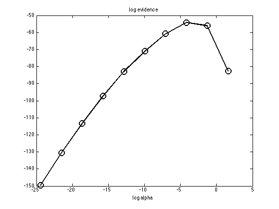 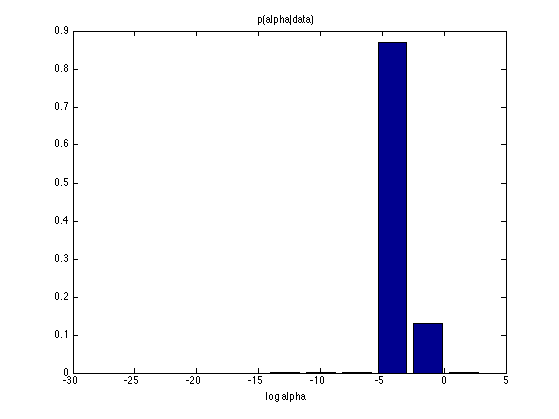
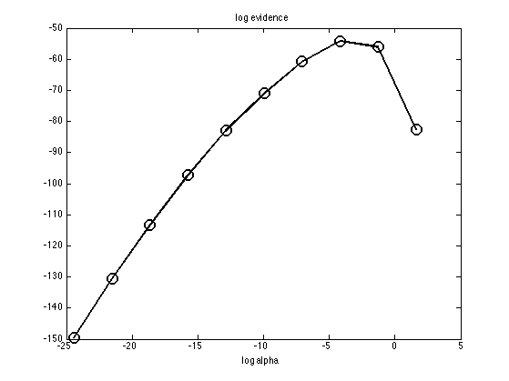 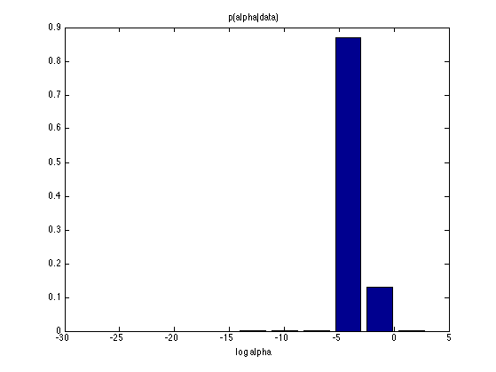 Now optimize alpha and beta using empirical Bayes
[modelEB, logevEB] = linregFitBayes(Xtrain, ytrain, 'preproc', pp, 'prior', 'eb'); alphaEB = modelEB.netlab.alpha; figure(figLogev); verticalLine(log(alphaEB), 'linewidth', 3, 'color', 'r'); printPmtkFigure(sprintf('linregPolyVsRegTestEbN%d', n))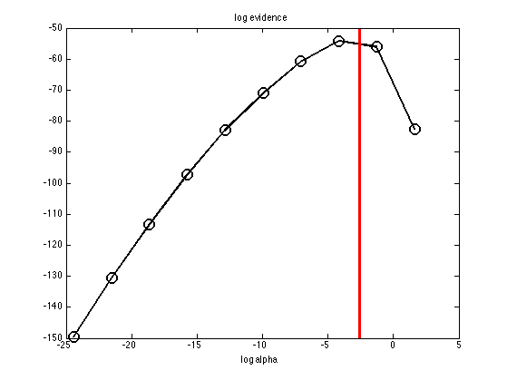
Now infer alpha and beta using VB
[modelVB, logevVB] = linregFitBayes(Xtrain, ytrain, 'preproc', pp, 'prior', 'vb'); alphaVB = modelVB.expectAlpha; figure(figLogev); verticalLine(log(alphaVB), 'linewidth', 3, 'color', 'b'); % Make figure containing both EB and CV % We need to rescale the vertical axes figLogevCv = figure; logevErr = -logev; logevErr = logevErr/max(logevErr); plot(log(alphas), logevErr, 'ko-', 'linewidth', 2, 'markersize', 12); hold on cvErr = log(mu); cvErr = cvErr/max(cvErr); plot(log(alphas), cvErr, 'bx:','linewidth', 2, 'markersize', 12 ); xlabel('log lambda') legend('negative log marg. likelihood', 'CV estimate of MSE') set(gca, 'xlim', [-20 5]) printPmtkFigure(sprintf('linregPolyVsRegCvEvidence')) %end % for n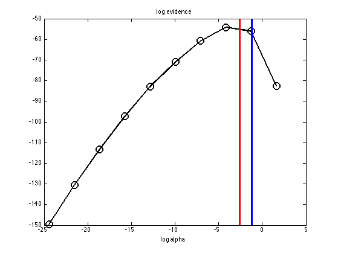 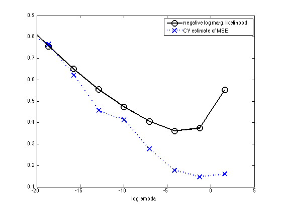